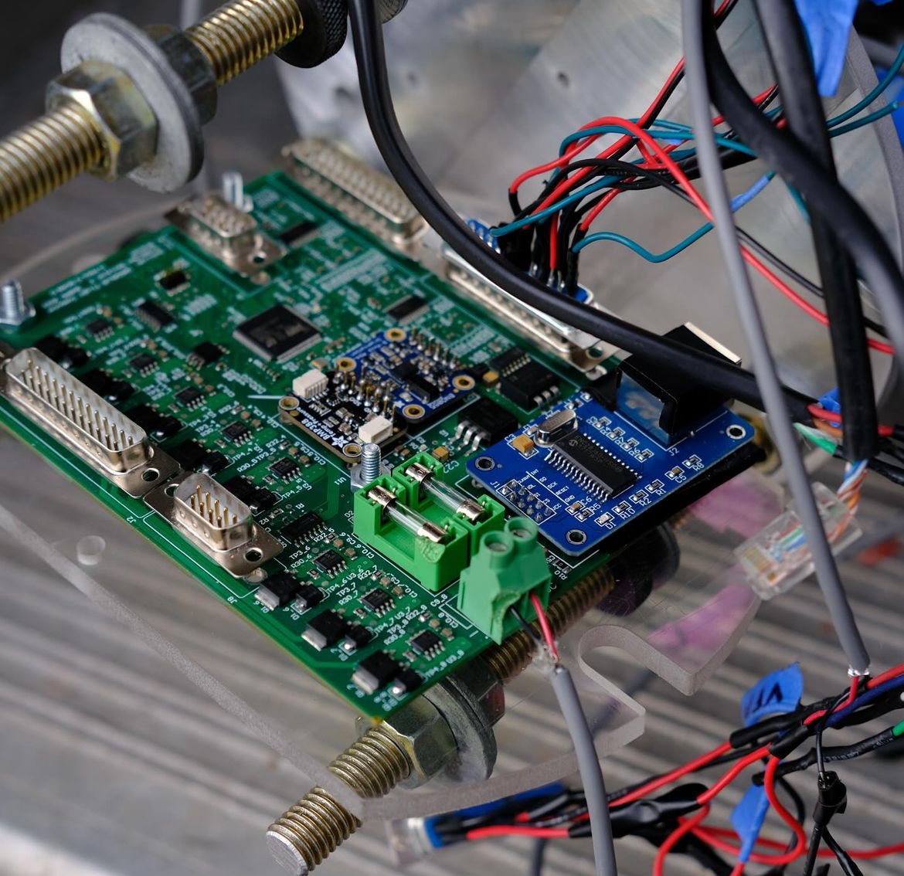

|

|
Developed a multi-threaded Python-based tool using Scapy to simulate a live connection to MOTE hardware through IP Spoofing and UDP packaging.
Implemented sensor and actuator state tracking with CSV logging, customizable data flagging, and real-time monitoring capabilities.
Designed a cross-platform solution with automatic network interface detection for seamless device integration.
Created a persistent command-line interface (argparse) for flexible configuration and control, enhancing user interaction.
|